Habilidades: ataque elegido y coste de ímpetu
- Ataque elegido: borde dorado de 2 px, barra dorada a la izquierda, fondo más claro y rombo ◆ delante del nombre (no depende solo del color). Igual en móvil, tableta y escritorio.
- Atributos: arriba «Comparando: …» y el coste en neutro, con rayo y reloj de arena. La fila Ímpetu ya no se pinta en rojo; en verde y rojo solo queda lo que cambia de verdad.
- Las capturas «después» salen de un prototipo real en el navegador, todavía sin aplicar en tu carpeta.
Móvil · lista de ataques con «Tajo desgarrador» elegido
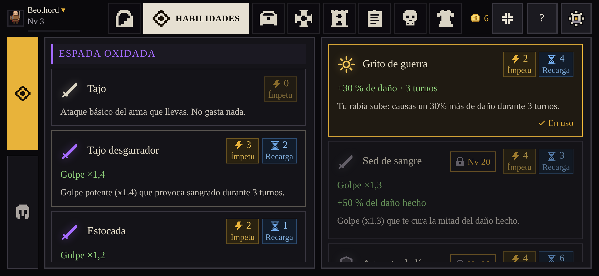
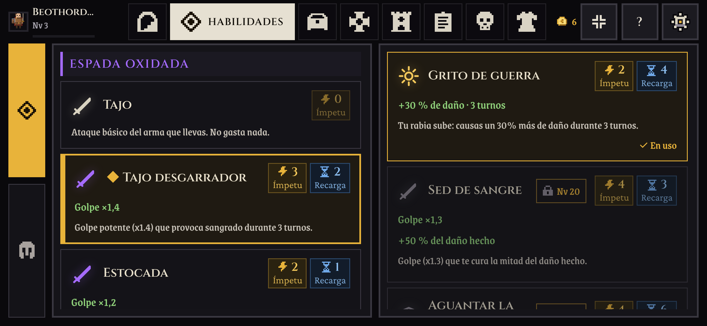
Móvil · página de atributos: «Comparando: …», coste neutro y fila Ímpetu sin rojo
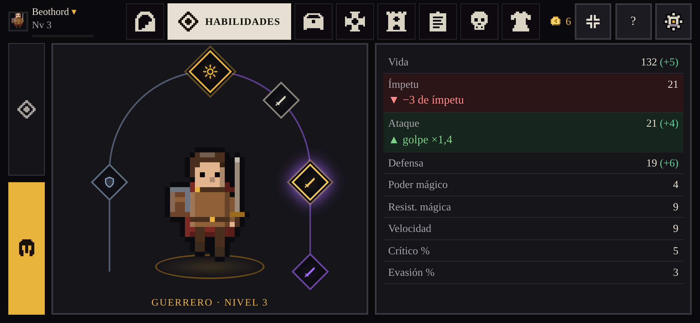
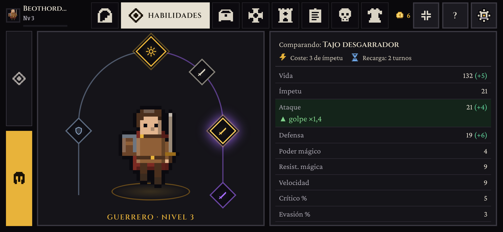
Móvil · al volver a la lista, la selección sigue
Escritorio · pantalla completa
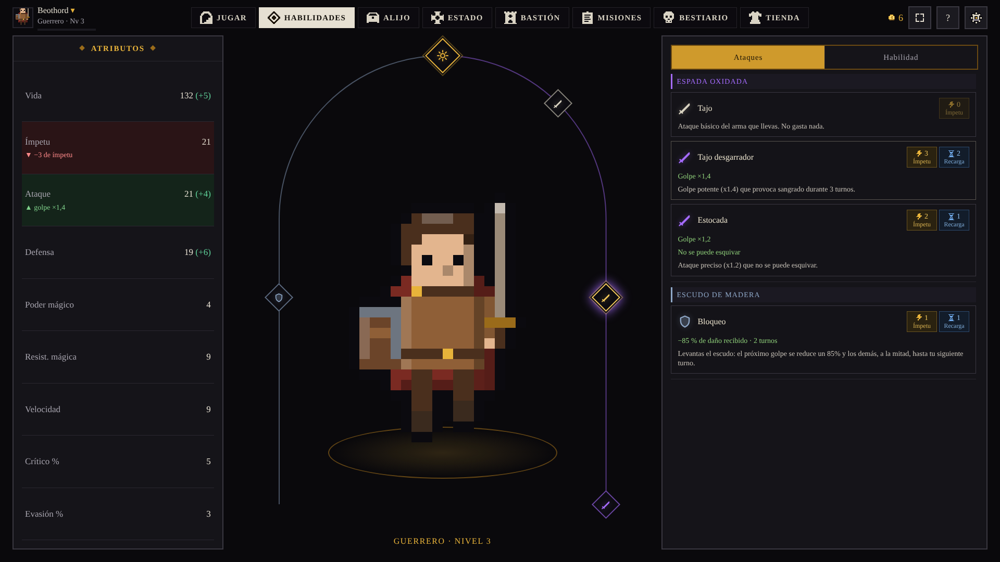
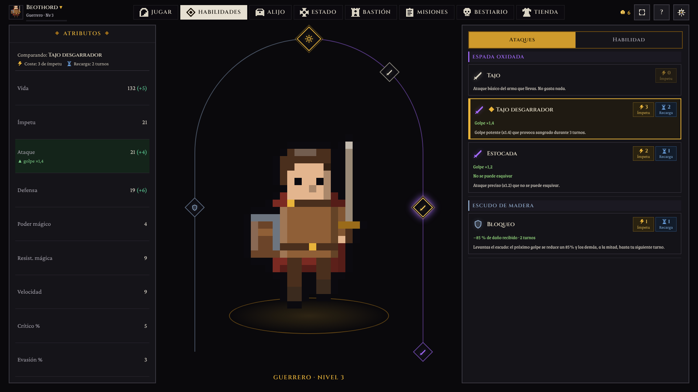
Escritorio · panel Atributos
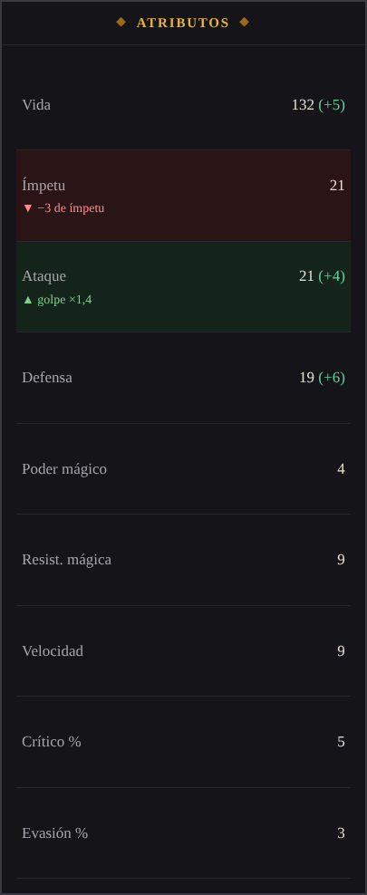
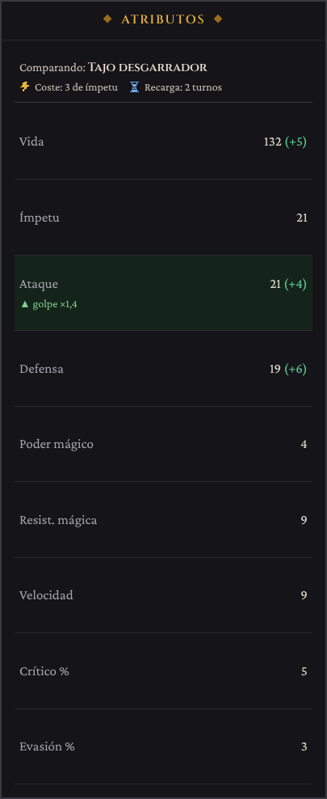
Tableta · pantalla completa
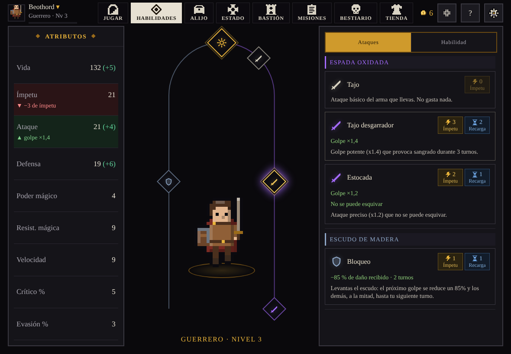
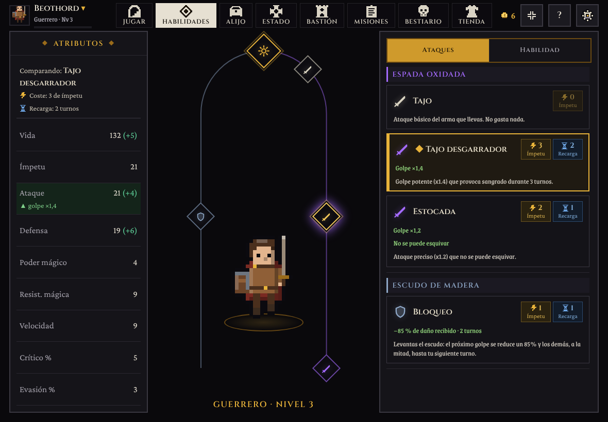
Tableta · panel Atributos
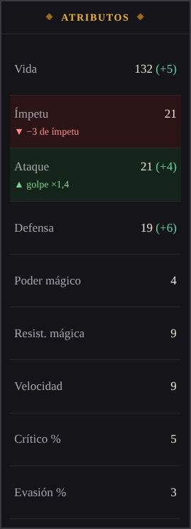
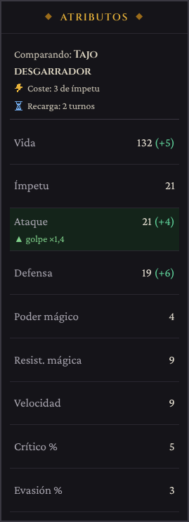